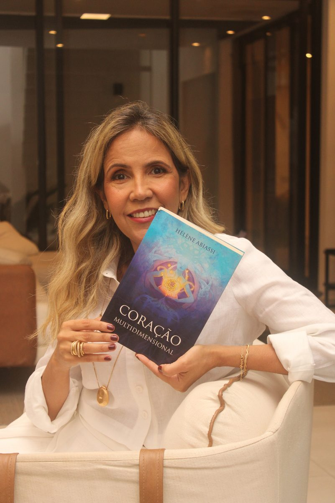
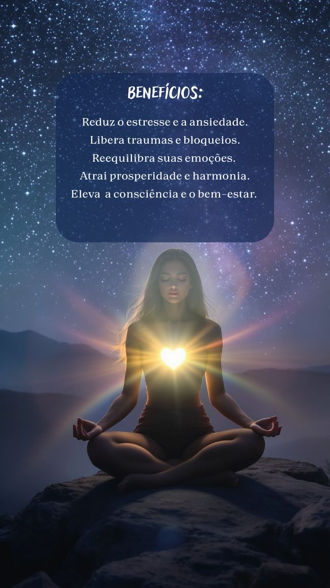
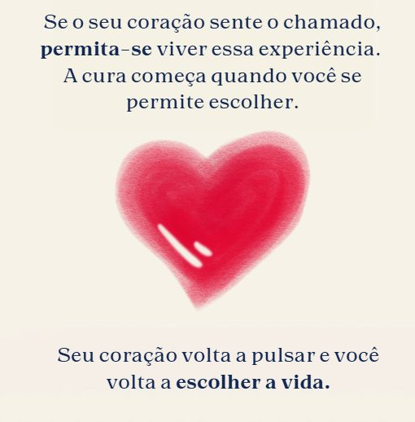

Terapia I
Terapia Multidimensional pelo Coração
O coração como portal da fé, da força interior e da verdade que habita em você.
A Terapia Multidimensional pelo Coração é uma ferramenta energética que atua no ponto mais sagrado do seu ser: o coração.
Durante a sessão, abrimos acesso a dimensões sutis de cura, onde uma egrégora amorosa, composta por Mestres Ascensionados, Seres de Luz e seu Anjo da Guarda, trabalha exatamente o que sua alma está pronta para liberar, realinhar e transformar.
É um tratamento que alcança lugares que a mente não consegue tocar, dissolvendo padrões, acolhendo feridas e abrindo caminhos de leveza, equilíbrio e reconexão.


